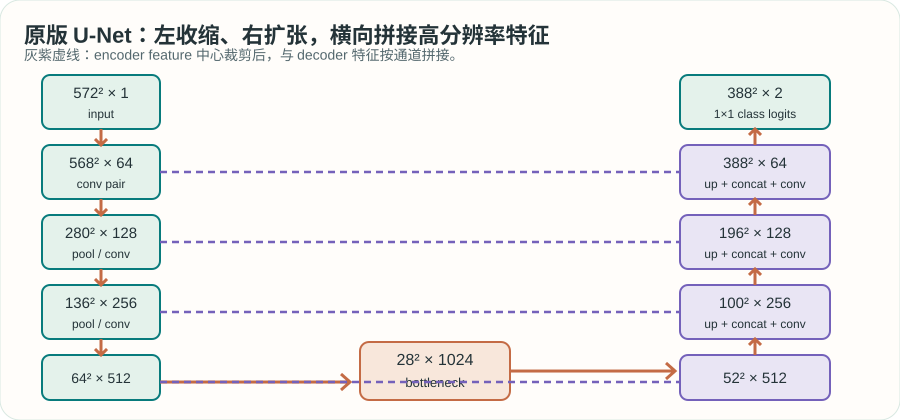
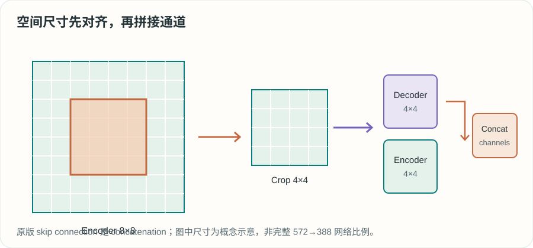
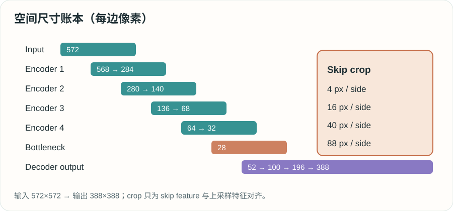
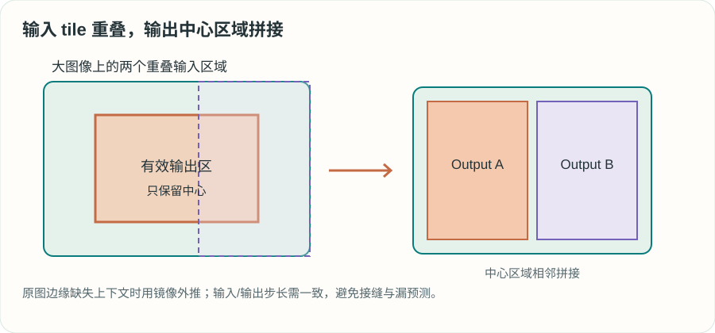
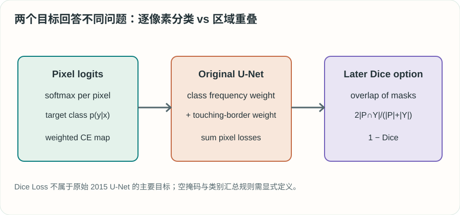

CHAPTER 20 · 图像分割
U-Net：用跳跃连接恢复像素级定位
U-Net 用对称的 contracting 与 expansive paths 结合上下文和精细位置。理解原始 valid-convolution 尺寸、中心裁剪、overlap-tile 与加权像素损失，才能区分 2015 年论文与现代 U-Net 变体。
从框级定位走向像素级语义预测
目标检测输出一组带类别的矩形框；语义分割则为图像中的每一个像素分配类别标签。对于显微图像，物体边界可能细而弯曲，相邻细胞可能接触；一个框很难表达细胞轮廓，也无法区分前景与背景之间的每个边界像素。U-Net 将分类主干改造成全卷积的 Encoder–Decoder：先逐步压缩空间分辨率以获取上下文，再逐步恢复分辨率，并把编码路径中的高分辨率特征直接传到解码路径。
必须区分三个分割任务：语义分割只回答“这个像素属于哪一类”；实例分割还要区分同类物体的不同实例 ID；全景分割则把可数的 thing 实例与不可数的 stuff 类别统一到同一像素标签图。U-Net 的 2015 年论文主要展示生物医学像素级分割，并用边界权重帮助分开相邻细胞；这不等于它原始输出头直接预测通用实例 ID。

Contracting Path：扩大感受野，逐层增加通道
原始 U-Net 的编码端每个尺度重复两次 3×3、stride 1、不 padding 的卷积，每次卷积后接 ReLU，再用 2×2、stride 2 的 max pooling 下采样。每次下采样后通道数翻倍：64→128→256→512，bottleneck 达到 1024。下采样减少空间成本、扩大有效感受野，但也会丢失精细位置。
这里的“valid convolution”是理解原版尺寸的关键：一个 3×3 无 padding 卷积会让每个空间维度减少 2；连续两次就减少 4。原版不是把每层都 pad 回原尺寸，因此 encoder 的 feature maps 会逐层变小。
每个尺度先经过两次 valid 3×3 卷积，再做 2×2、stride 2 的 max pooling。尺寸均假定能被 2 整除。
随着分辨率下降，网络获得更大的上下文，但如果只依赖最深层特征，边界与小结构容易变得模糊。解码路径因此需要从 encoder 取回空间细节。
Expansive Path：上采样后先裁剪，再拼接 Skip Connection
解码端每一步先用 2×2 up-convolution（转置卷积）把特征图放大两倍，并把通道数减半；然后把同尺度 encoder 特征中心裁剪到相同空间大小，沿通道维 concatenation；最后再做两次 3×3 valid convolution + ReLU。Skip Connection 在这里不是 ResNet 的逐元素相加，而是特征通道拼接：低层提供边缘与位置细节，高层提供语义上下文。

原版输入 tile 为 572×572，输出为 388×388。空间尺寸不相等不是代码 bug，而是 valid convolution 的直接结果：模型只为拥有完整输入上下文的中心区域输出预测。现代 same-padding U-Net 常让输入输出保持同尺寸，但它改变了边界行为和几何约定，不能与原论文图 1 混为一谈。
把原始 572→388 的空间尺寸逐层算出来
从 572 开始，四个 encoder stage 的两次 valid 卷积与池化依次得到 568→284、280→140、136→68、64→32；bottleneck 两次卷积得到 28。解码端依次上采样到 56、104、200、392，并把对应 encoder skip feature crop 到这些尺寸；每个尺度再做两次 valid 卷积，最后得到 52、100、196、388。最终 1×1 卷积把 64 个通道映射到类别 logits，不改变空间尺寸。

def conv_pair(size):
# Two unpadded 3x3 convolutions, stride 1
return size - 4
size = 572
encoder_skips = []
for _ in range(4):
size = conv_pair(size)
encoder_skips.append(size)
assert size % 2 == 0
size //= 2
bottleneck = conv_pair(size)
size = bottleneck
decoder = []
for skip_size in reversed(encoder_skips):
size *= 2 # 2x2 up-convolution, stride 2
crop_each_side = (skip_size - size) // 2
assert skip_size - size == 2 * crop_each_side
size = conv_pair(size)
decoder.append((size, crop_each_side))
assert encoder_skips == [568, 280, 136, 64]
assert bottleneck == 28
assert decoder == [(52,4), (100,16), (196,40), (388,88)]
assert size == 388
print("original U-Net: 572 ->", size)Overlap-Tile：如何把有限显存扩展到任意大图像？
原始 U-Net 没有全连接层，可以对不同大小的图像 tile 做卷积预测。由于输出只覆盖输入中心区域，推理时使用 overlap-tile strategy：输入 tile 提供比预测区域更大的上下文，模型只输出中间的有效区域；相邻 tile 的有效输出拼接起来覆盖整张大图。靠近原图边界时，缺失的上下文通过镜像（mirroring）外推。

这不是简单地把一张超大图 resize 到网络输入尺寸。重叠推理让局部输出始终拥有足够上下文，同时避免一次性把整张大图送入 GPU。tile 的输入/输出尺寸、重叠步长、镜像 padding 和拼接坐标必须彼此一致，否则会出现接缝、遗漏或重复区域。
原始论文的训练目标：带像素权重的 Softmax Cross Entropy
U-Net 原论文不是用 Dice Loss 作为主要训练目标。它在最终 feature map 上做逐像素 softmax，再对每个像素的真实类别计算交叉熵，并乘以预先计算的权重图 (w(x))。权重图一部分用于平衡类别频率，另一部分强调相邻细胞之间狭窄的分隔边界。原论文给出 (w_0=10)、(sigma≈5) pixels 的设置，以便模型更重视那些容易被合并的边界像素。
Ω 是输出像素集合，ℓ(x) 是像素真值类别，p_{ℓ(x)}(x) 是 softmax 对真值类别的概率。
Dice coefficient / Dice Loss 是后来分割任务中常见的区域重叠目标，尤其适合前景稀少的场景。二分类 soft Dice 常写作：
p 是前景概率，y 是二值真值，ε 防止分母为零；多类别任务通常按类别分别计算再汇总。
Dice 的空掩码处理、是否包含背景类、按样本还是按 batch 汇总都会改变数值。Dice 与交叉熵联合使用是常见现代实践，但应明确写成后续训练选择，而不是原论文复现。

可运行实验：复核几何尺寸、加权 CE 与 Dice
第一个脚本只做尺寸推导，不构造完整网络；第二个脚本在一个 2×2 toy mask 上计算像素加权 cross entropy 与可微分 Dice Loss。它用来检查张量轴、标签类型和梯度是否正确，不代表在医学影像数据集上训练出的模型。
import torch
import torch.nn.functional as F
logits = torch.tensor(
[[[[2.0,-1.0],[0.5,-0.5]],
[[-1.0,2.0],[0.0,1.0]]]],
requires_grad=True
) # [N=1, K=2, H=2, W=2]
target = torch.tensor([[[0,1],[1,0]]], dtype=torch.long)
pixel_weight = torch.tensor([[[1.0,2.0],[2.0,1.0]]])
pixel_ce = F.cross_entropy(logits, target, reduction="none")
weighted_ce = (pixel_ce * pixel_weight).sum() / pixel_weight.sum()
prob_fg = logits.softmax(dim=1)[:,1]
target_fg = (target == 1).float()
eps = 1e-6
dice = (2*(prob_fg*target_fg).sum()+eps) / (
prob_fg.sum()+target_fg.sum()+eps
)
dice_loss = 1-dice
combined_demo = weighted_ce + dice_loss
combined_demo.backward()
assert pixel_ce.shape == target.shape
assert torch.isfinite(weighted_ce) and torch.isfinite(dice_loss)
assert logits.grad is not None and logits.grad.abs().sum() > 0
assert 0 <= float(dice) <= 1
print("weighted CE:", float(weighted_ce), "dice:", float(dice))训练与医学图像应用中的边界条件
原论文依赖强数据增强，尤其是弹性形变（elastic deformation），让有限的标注图像产生更多合理的组织形态变化；也使用 overlap-tile 推理与像素权重图来解决边界和相邻细胞问题。医学图像中的训练/验证划分必须按患者、切片序列或实验批次考虑相关性，不能把同一患者相邻切片随机分到训练集与测试集，否则容易产生数据泄漏。
U-Net 的“U”形外观不是保证泛化的原因本身。性能还受标注一致性、图像模态、设备域偏移、类别比例、增强分布、输出阈值和后处理影响。医疗场景还需要校准、不确定性评估、外部验证与临床工作流评估；像素 IoU/Dice 高并不自动意味着临床风险低。
理解检查：原版 U-Net 的 skip connection 是逐元素相加吗？
不是。原版在 crop 对齐后沿通道维 concatenate，再经过两次卷积融合。ResNet 的 identity addition 是另一种连接方式。
原始论文与技术文档
原始 U-Net 的 valid-convolution 几何、加权像素级 softmax 损失与 overlap-tile 策略已单独标明；Dice Loss 作为后续常用扩展，不冒充 2015 年原论文的训练目标。